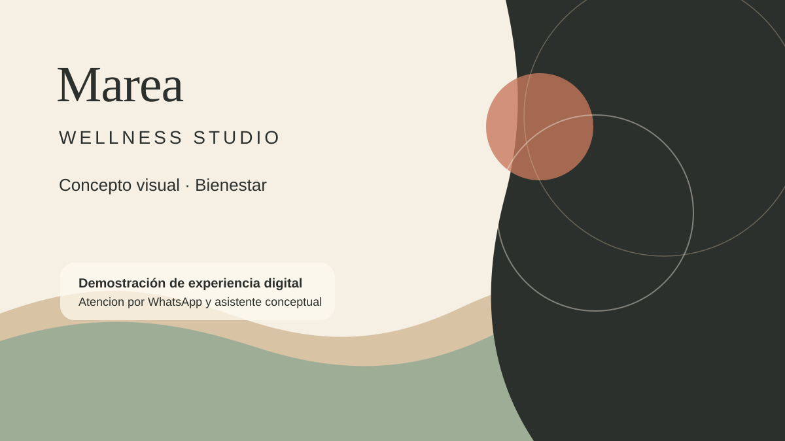

Servicios mas faciles de entender
El visitante encuentra opciones, condiciones y siguientes pasos sin depender solo de redes sociales.
Concepto visual · Belleza y bienestar
Demostración de una experiencia digital para bienestar, tratamientos y atención por WhatsApp.
Este concepto fue creado por NEXO26 como demostración visual. No representa a un negocio real.

Bienestar · Cuidado personal · Relajación
La estructura muestra cómo un negocio de bienestar podría explicar servicios, resolver dudas frecuentes y preparar una solicitud voluntaria por WhatsApp sin simular reservas reales.
Servicios ficticios
El contenido, duración y precio se adaptan a cada negocio. No se muestran precios ficticios como reales.
Lo que una experiencia como esta puede comunicar
El visitante encuentra opciones, condiciones y siguientes pasos sin depender solo de redes sociales.
El mensaje por WhatsApp puede llegar con información ordenada para facilitar la conversación.
La identidad, fotografia, textos y CTA se alinean para proyectar confianza desde el primer vistazo.
Experiencias
El concepto evita confirmar citas o disponibilidad; solo prepara información útil para adaptar el flujo.
Galeria editorial
Proceso de atención
El visitante revisa servicios y alcances demostrativos.
El asistente conceptual ordena preferencias sin confirmar citas reales.
Se prepara un mensaje voluntario dirigido a NEXO26 para adaptar el ecosistema.
La version final se ajusta con datos reales del negocio.
Asistente Marea
Esta es una demostración conceptual. No consulta disponibilidad real, no confirma citas y no guarda información.
Ubicación demostrativa
La ubicación definitiva se configura con los datos reales del negocio.
Horarios de demostración
La disponibilidad y atención se personalizan para cada negocio.
Preguntas frecuentes
Adaptar este ecosistema a mi negocio
NEXO26 puede adaptar estructura, contenido, estilo visual y flujo de WhatsApp con datos reales de tu negocio.
Adaptar este ecosistema a mi negocioConcepto desarrollado por NEXO26 para demostrar una posible estructura digital en el sector de bienestar. El nombre, contenido y datos son ficticios.